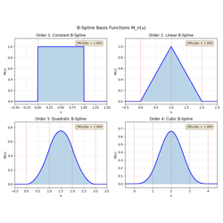
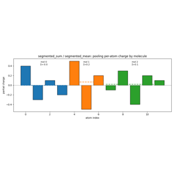
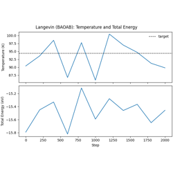
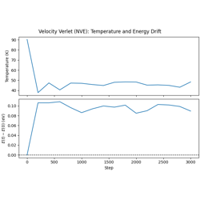
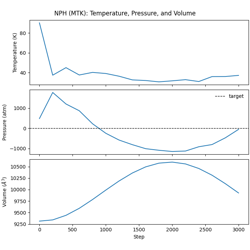
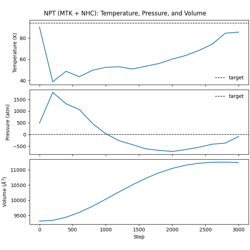
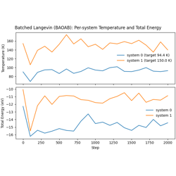
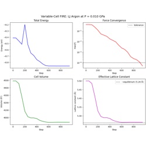
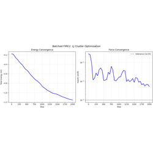
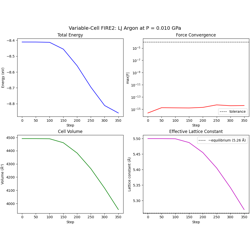

Examples Gallery#
This gallery contains examples demonstrating the capabilities of ALCHEMI Toolkit-Ops. Each example is a fully executable Python script that showcases different features of the library, from basic neighbor list construction to advanced dispersion corrections.
All examples are designed to run on both CPU and GPU, automatically detecting available hardware. The code can be downloaded as Python scripts or Jupyter notebooks.

B-Spline Interpolation for Particle Mesh Methods

Segment Ops: Pooling, Autograd, and torch.compile
Dispersion Interactions#
Examples demonstrating GPU-accelerated computation of DFT-D3 dispersion corrections with environment-dependent C6 coefficients.
These examples show how to:
Compute dispersion energies and forces for molecules
Process batches of crystal structures
Integrate with PyTorch for differentiable workflows


DFT-D3 Dispersion Correction for Batched Crystals
Dynamics Examples#
This directory contains examples demonstrating the molecular dynamics integrators and geometry optimization algorithms in nvalchemiops.
All examples use realistic Lennard-Jones (LJ) argon systems to demonstrate practical workflows with neighbor list management and periodic boundaries.
MD Integration Examples#
- 01_langevin_integration.py
Langevin (BAOAB) dynamics in the NVT ensemble.
Simulates liquid argon near the triple point (94.4 K)
BAOAB splitting for configurational sampling
Temperature monitoring and equilibration
- 02_velocity_verlet_integration.py
Velocity Verlet dynamics in the NVE ensemble.
Symplectic, time-reversible integrator
Energy conservation diagnostics
Stability considerations for LJ systems
- 03_nph_integration.py
NPH dynamics with MTK barostat.
Constant enthalpy and pressure ensemble
Martyna-Tobias-Klein extended-system barostat
Pressure coupling mechanics
- 04_npt_integration.py
NPT dynamics with MTK barostat + Nosé-Hoover chain thermostat.
Isothermal-isobaric ensemble
Combined temperature and pressure control
Volume fluctuations under constant pressure
- 05_batched_langevin_dynamics.py
Batched Langevin dynamics for multiple independent systems.
Multiple systems packed into single arrays
Per-system temperature targets
Improved GPU utilization for small systems
Geometry Optimization Examples#
- 06_fire_optimization.py
FIRE geometry optimization for a single LJ cluster.
Fast Inertial Relaxation Engine (FIRE) algorithm
Adaptive timestep and velocity mixing
Convergence monitoring (energy, max force)
- 07_fire_variable_cell.py
Variable-cell FIRE optimization for joint atom + cell relaxation.
Cell alignment to upper-triangular form
Virial → stress → cell force conversion
Pack/unpack utilities for extended DOF arrays
External pressure equilibration
- 08_fire_batched.py
Batched FIRE optimization with two indexing strategies:
batch_idx mode: Each atom tagged with system index
atom_ptr mode (CSR): Atom ranges via pointers
Per-system FIRE parameters adapt independently
Uses
nvalchemiops.batch_utilsfor reductions
- 09_fire2_optimization.py
FIRE2 geometry optimization for a single LJ cluster.
Improved FIRE variant (Guenole et al., 2020)
Adaptive damping and coupled step/dt scaling
Requires
batch_idxeven for single-system modeHyperparameters are Python scalars (no per-system arrays)
- 10_fire2_batched.py
Batched FIRE2 optimization with
batch_idxbatching.Multiple independent LJ clusters optimized in parallel
Per-system FIRE2 parameters adapt independently
Only supports
batch_idxmode (noatom_ptrvariant)
- 11_fire2_variable_cell.py
Variable-cell FIRE2 optimization for joint atom + cell relaxation.
Uses
fire2_step_coord_cellfor coupled coordinate/cell updatesPreserves fractional coordinates during cell-only motion
Simpler state than FIRE (no masses, fewer per-system arrays)
Key Concepts#
State Management#
All algorithms use @wp.struct containers for clean organization:
MDState: positions, velocities, forces, massesFIREState: MDState + adaptive parameters (dt, alpha, n_positive)Integration parameters:
VerletParams,LangevinParams,FIREParams
Structs are dtype-agnostic: use wp.vec3f/wp.float32 for single
precision or wp.vec3d/wp.float64 for double precision.
Two-Pass Integrators#
MD integrators use a two-pass design for flexibility:
# Pass 1: Update positions and half-step velocities
velocity_verlet_position_update(state, params)
# User computes forces at new positions
compute_forces(state.positions, state.forces)
# Pass 2: Complete velocity update
velocity_verlet_velocity_finalize(state, state.forces, params)
This allows any force calculation method to be used between the passes.
Batching Modes#
For processing multiple systems efficiently:
batch_idx: Array mapping each atom to its system index. Flexible for heterogeneous systems but requires atomic accumulation.
atom_ptr (CSR): Pointer array where system s owns atoms
[atom_ptr[s], atom_ptr[s+1]). More efficient for homogeneous batches.
Use nvalchemiops.batch_utils for conversions and per-system reductions.
Variable-Cell Optimization#
The cell_filter utilities enable joint optimization of positions and cell
with FIRE. FIRE2 variable-cell optimization should use the coupled
fire2_step_coord_cell adapter, which applies the affine coordinate remap
implied by cell motion.
Generic cell-filter workflow for optimizers such as FIRE:
# 1. Align cell to upper-triangular form
positions, cell = align_cell(positions, cell)
# 2. Pack atomic + cell DOFs into extended arrays
extended_pos = pack_positions_with_cell(positions, cell, ...)
extended_forces = pack_forces_with_cell(forces, cell_force, ...)
# 3. Run optimizer on extended arrays
fire_step(extended_pos, extended_vel, extended_forces, ...)
# 4. Unpack results
positions, cell = unpack_positions_with_cell(extended_pos, ...)
Running the Examples#
Make sure you have warp installed:
pip install warp-lang
Run from the repository root:
python examples/dynamics/01_langevin_integration.py
python examples/dynamics/06_fire_optimization.py
python examples/dynamics/08_fire_batched.py
Or run interactively in VS Code or Jupyter by executing cell-by-cell
(sections marked with # %%).

Langevin Dynamics with Lennard-Jones Potential

Velocity Verlet Dynamics with Lennard-Jones Potential

NPH Dynamics (MTK) with Lennard-Jones Potential

NPT Dynamics (MTK + Nosé-Hoover Chain) with Lennard-Jones Potential

Batched Langevin Dynamics (BAOAB) with Lennard-Jones Potential

Variable-Cell FIRE Optimization with LJ Potential

Batched FIRE2 Optimization with LJ Clusters

Variable-Cell FIRE2 Optimization with LJ Potential
Electrostatics#
Examples demonstrating GPU-accelerated computation of long-range electrostatic interactions in periodic systems using Coulomb, Ewald summation, and Particle Mesh Ewald (PME).
These examples show how to:
Compute direct Coulomb interactions (damped and undamped)
Use Ewald summation for periodic systems with automatic parameter estimation
Apply two-dimensional slab corrections for Ewald and PME interfacial systems
Apply Particle Mesh Ewald (PME) for O(N log N) scaling
Work with neighbor list and neighbor matrix formats
Perform batch evaluation for multiple systems
Leverage autograd for computing forces and gradients
Compute multipole Ewald and PME totals with charges, dipoles, and quadrupoles (l_max = 0 / 1 / 2), including stress tensors via the cell gradient and force-loss-style training via the second-order backward Warp kernel
Extract atom-centered multipole features by projecting the periodic potential onto receiver GTOs
Amortize the position-independent reciprocal-space state with the multipole SCF cache and reuse it across many step evaluations
Train on forces, stress, and charge gradients via the energy-derivative contract (the recommended replacement for the deprecated direct-output flags)
The full Torch Ewald/PME APIs support first- and second-order energy-derived training workflows. The full JAX Ewald/PME APIs support first-order energy-derived gradients for positions, charges, and row-vector displacement virials. Higher-order JAX support is limited to tested position and charge scalar losses; PME cell/stress/strain higher-order derivatives are unsupported. Electrostatics does not expose public Hessian or Jacobian APIs.
Point-charge Ewald/PME examples use float64 for accuracy-sensitive
reciprocal-space calculations and gradient checks. The APIs also support
float32 when throughput is the priority; keep all floating inputs and
precomputed metadata in a call on a consistent dtype.


Particle Mesh Ewald (PME) for Long-Range Electrostatics
Particle Mesh Ewald (PME) with JAX


Multipole Ewald Summation (charges + dipoles + quadrupoles)

Multipole Particle Mesh Ewald (charges + dipoles + quadrupoles)


Multipole SCF Cache + Step (amortized fixed-cell workflow)

Energy-Derivative Training Contract (Forces, Stress, Charge Gradients)
Neighbor Lists#
Examples demonstrating efficient O(N) neighbor list construction using GPU-accelerated cell list algorithms.
These examples show how to:
Build neighbor lists for single and batched systems
Use dense or sparse COO output formats
Inspect Torch cost-model dispatch estimates
Request compact source rows with
target_indicesReturn per-neighbor vectors and distances, including differentiable geometry
Compute inline Lennard-Jones pair energies and forces with
pair_fnDetect when neighbor lists need rebuilding
Optimize performance with
torch.compileIntegrate with molecular dynamics workflows